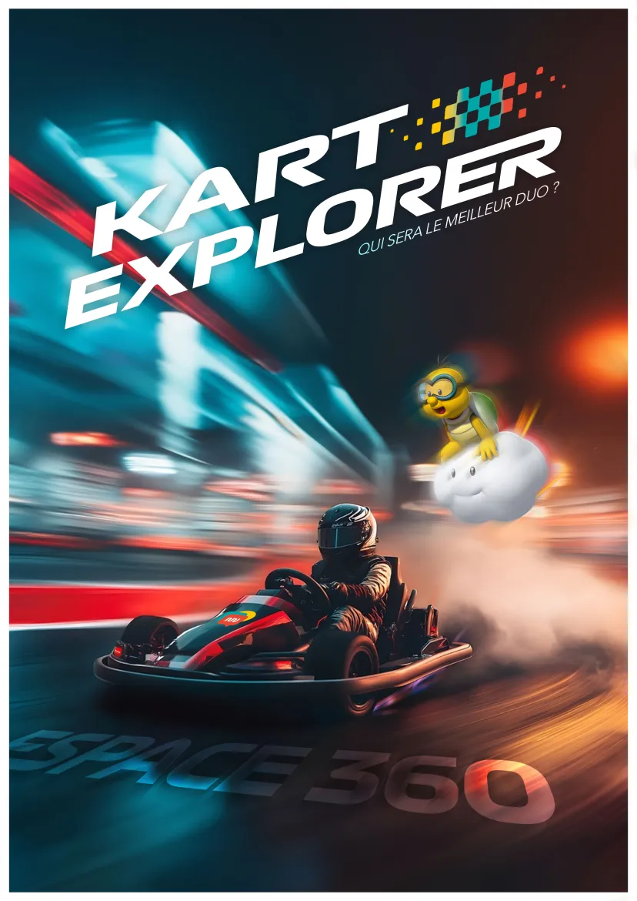

Kart Explorer est une compétition en duo.
Les équipes, appelées écuries, se défient dans des courses de karting électrique sur piste ainsi que sur Mario Kart.
L’objectif ?
Élire le meilleur duo de la NWS !
Ce projet combine à la fois l’excitation des courses réelles et la compétition virtuelle. C’est une manière ludique de rassembler les étudiants tout en développant leurs compétences techniques à travers la création de cet événement unique.
